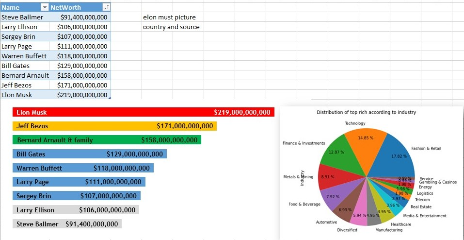
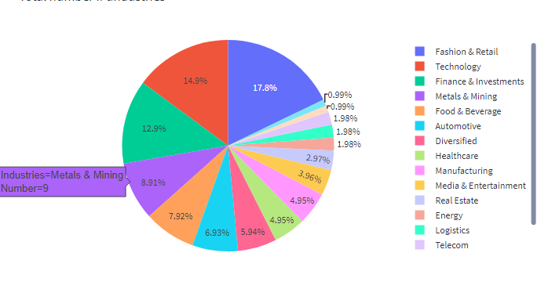
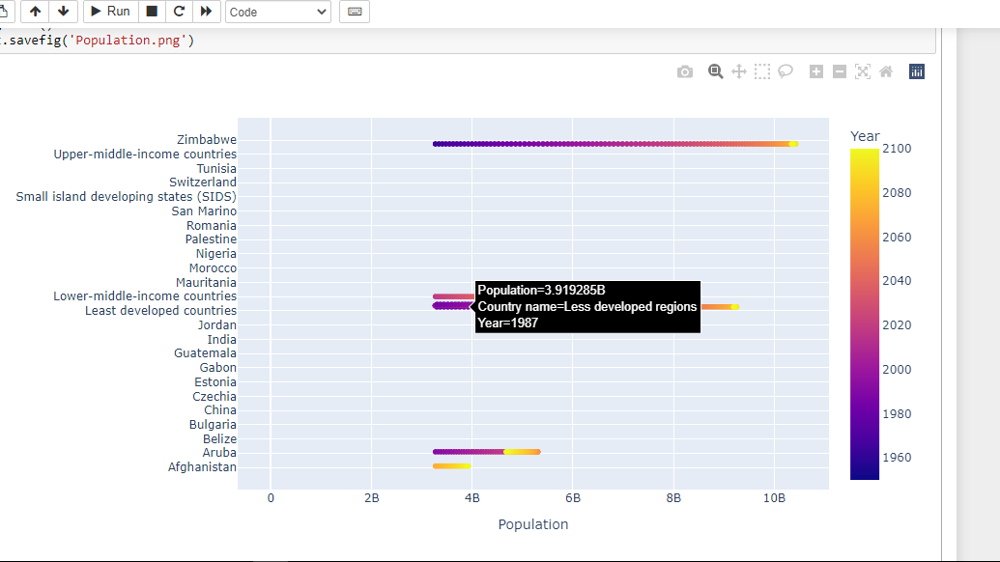
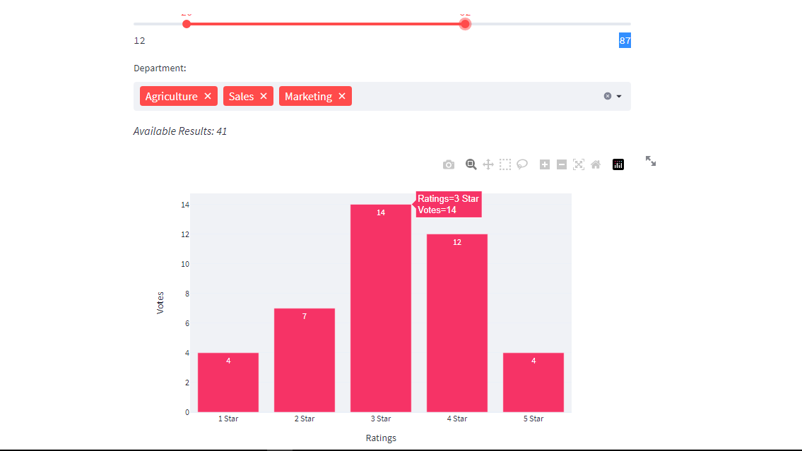
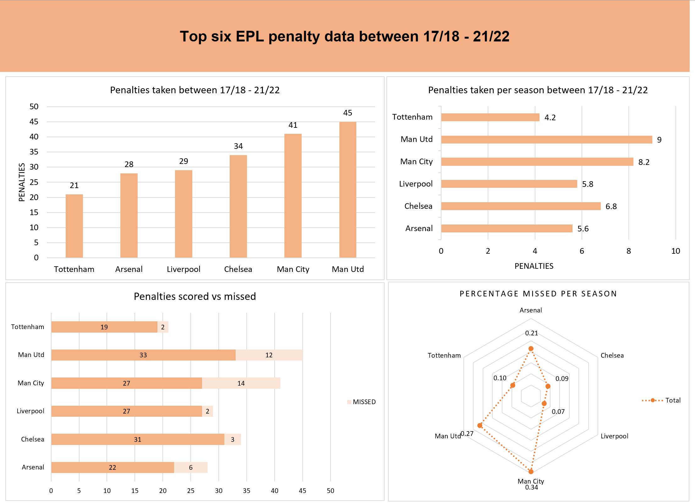
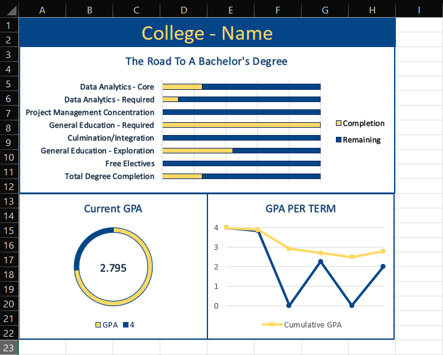

Data Analyst | Data Scientist
"l will help you make more informed, smart and data-driven decisions"
SKILLS
Coming from a background of Agriculture Research, Social Development and Training Enumerators,
l have theoretical and practical knowledge in quetionnaire design, Survey administration and impact assessment,
l have Data Management experience using Kobo Toolbox and collection using ODK, Commcare, Smallholder and FarmLab.
Get More Value from Your Data, as a certified Analyst, l specialise in Data harvesting, cleaning and reshaping,
develoment of automated workflows, application of maths, statisctical methods and identifying trends, l have a proven track record
of working with SQL, R-Studio, Python (Juypter NoteBook, pandas, Scipy), Excel, STRATA and SPSS.
More than art and eye catching infographics and storytelling skills, l will present your data for easly understanding by
creating static and interactive dashboards, l use different Data visualization Tools such as Microsoft Excel,
Python (Matplotlib, Seaborn, streamlit, Plotly, Geopandas) and Tableau Public.
With great presentation and interaction skills, l will help in sharing, Communicating
and interpreting results. Fundamentaly, helping in putting the isignts to work to solve different problems,
implementing, Monitoring and evaluation of different Data Life Cycle.
"With Great Visuals and Presentation, l will bring your Data to Life"
PORTFOLIO






About me
Hi, l'm Promise Kelechi Mthunzi,
An experienced and impact driven Agriculture Research and Etension Officer,
l hold Batchelor's in Agri-Business Management and Certificate in Data Analytics,
l have worked as Data analyst freelancer, skilled in most of Data analystic steps:
Collect, Analyse, Visualise, share and Act. My goal is to help Companies, Reseachers
and Stakeholder make Smart and informed Data driven decisions.
"Always Deliver More Than Expected"
Promise Kelechi Mthunzi
"Wondering how you can make the best Data-Driven-Becisions?"